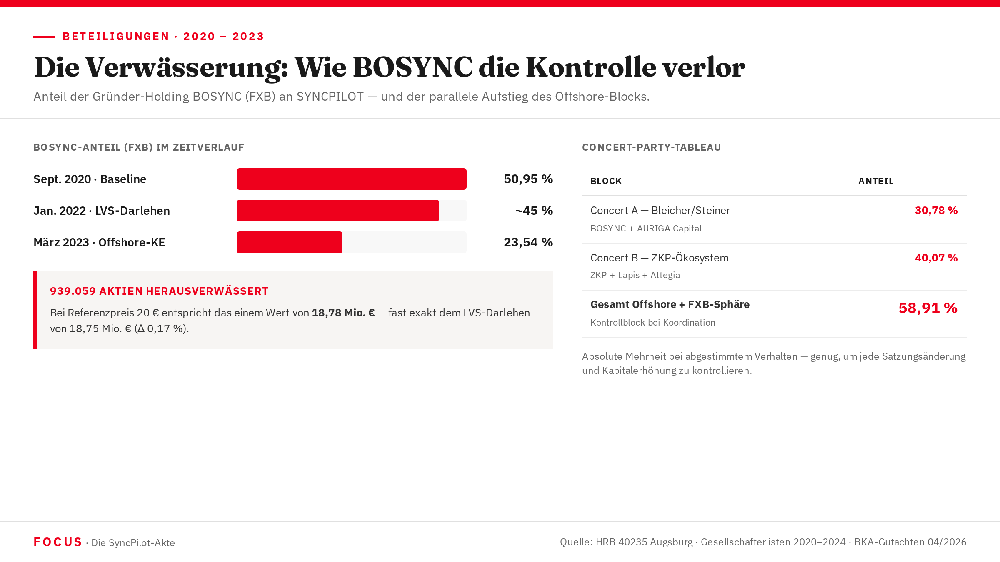

Cap-Table-Entwicklung 2015 → 2026
939.059 Aktien — und die Frage, wie eine Vorratsgesellschaft aus München binnen acht Jahren zu einem maltesischen Offshore-Konstrukt mit 60,13 % Fremdanteil wurde.

Von Blitz 15-32 zu SyncPilot — eine Vorratsgesellschaft erfindet sich neu
Am 24. Januar 2015 registriert ein Notar in München eine Gesellschaft mit dem internen Lagernummern-Namen Blitz 15-32 GmbH. Stammkapital: 25.000 €. Die Zahlen verraten ihre Herkunft — eine Vorratsgesellschaft, auf Lager produziert, bereit für eine schnelle Übernahme.
Im Februar 2015 vollzieht sich die Übernahme: Die Blitz-Gesellschaft wird auf SyncPilot GmbH umbenannt, die Quintus Beteiligungs GmbH tritt als erster externer Gesellschafter ein. Franz Xaver Bleicher — kurz FXB — bekommt seinen Hebel: die BOSYNC Beteiligungs UG, durch die er fortan seine Anteile hält. Im November desselben Jahres wird Stephan Meusel als erster operativer Geschäftsführer bestellt. Fakt
Was wie ein gewöhnlicher Startup-Aufbau aussieht, trägt von Beginn an ein Konstruktionsprinzip in sich: Mehrschichtigkeit als Methode. Nicht ein Investor — eine Gruppe. Nicht transparent — hinter Holdinggesellschaften verschachtelt. Die Gesellschaft DSI Beteiligungen GmbH, der dritte Hauptgesellschafter, bündelt mindestens sechs Sub-Beteiligte, darunter eine Entität namens „Chance Consulting" mit bis dato unbekanntem wirtschaftlich Berechtigtem.
Von 2015 bis 2020 wächst SyncPilot: Produkt, Vertrieb, Mitarbeiter, Umsatz. Das Unternehmen ist real. Und genau das macht das, was danach kommt, forensisch bedeutsam — FXB plündert etwas mit echter Substanz.
Die Cap-Table-Zeitreihe 2015–2026
Gesellschafterstruktur SyncPilot GmbH/SE nach verfügbaren Handelsregister-Einträgen und forensischem Gutachten (Sonntag & Partner, April 2026). Prozentzahlen gerundet.
| Snapshot | Datum | BOSYNC (FXB) | Quintus | DSI | Offshore-Entitäten | Sonstige | Status |
|---|---|---|---|---|---|---|---|
| S1 — Gründung | Feb. 2015 | k. A. | früher Einstieg | — | 0 % | FXB direkt / Gründer | Fakt |
| S2 — Baseline | Sept. 2020 | 50,95 % | ~15–20 % | ~10–15 % | 0 % | Kleingesellschafter | Fakt |
| S3 — LVS-Darlehen | Jan. 2022 | ~45 % (gesch.) | k. A. | k. A. | 0 % | — | Fakt |
| S4 — Massenkapitalerhöhung | März 2023 | ~32 % | — | — | ~39,8 % (neu) | Perseus: 7,76 % | Fakt |
| S5 — Endstand | Sept. 2023 | 23,54 % | — | — | 60,13 % | Schaeff 2,30 % | Fakt |
| S6 — ao. HV 05.08.2025 | Aug. 2025 | BOSYNC reduziert (38.462 Aktien übertragen) | — | — | ATLASI + Callidus neu (38.462 Kauf + 21.739 Bar-KE) | Grundkapital: 5.554.292 Stück | Fakt — Anlage S&P 10 |
BOSYNC hat in absoluten Aktienzahlen zugenommen (von ~1.153.000 auf ~1.312.893 Stück), weil FXB an einzelnen Kapitalerhöhungen teilgenommen hat. Der Verlust ist rein prozentualer Natur — aber er ist real: 939.059 Aktien wechselten den wirtschaftlichen Eigentümer. Bei einem Referenzpreis von 20 €/Aktie entspricht das 18,78 Mio. €. Fakt — BKA-Gutachten, Abschnitt VI.3
Die notarielle HV-Niederschrift vom 5. August 2025 (Anlage S&P 10) dokumentiert die Genehmigung von vier Aktienkaufverträgen: BOSYNC Beteiligungs UG und Perseus Innovations & Services Holding Ltd. (Malta, C 101759) übertragen zusammen 38.462 Aktien an ATLASI GROUP GmbH (Gesellschaft schweizerischen Rechts, Zugerstrasse 32, CH-6341 Zug-Baar) und Callidus Ventures GmbH (München, HRB 304280). ATLASI erhält insgesamt 25.641 Aktien (17.094 von BOSYNC + 8.547 von Perseus), Callidus 12.821 Aktien (8.547 von BOSYNC + 4.274 von Perseus). Zusätzlich: Barkapitalerhöhung um 21.739 neue Aktien. Dokumentiertes Grundkapital SYNCPILOT SE: 5.554.292 Stückaktien (gesondert von der BOSYNC-Verwässerungszahl 939.059).
Vier frühe Erhöhungen — und die große Verwässerung
Zwischen 2017 und 2022 vollzieht FXB vier Kapitalerhöhungen, die sich aus der Außenperspektive unspektakulär lesen. Stammkapital-Schritte von 25.000 € auf letztlich 49.160 €. Kleine Beträge, wenig Aufmerksamkeit. Aber sie sind die Probe — der Übungslauf für das, was im März 2023 folgt.
Das Grundmuster bleibt konstant: FXB als Alleingeschäftsführer legt den Emissionspreis fest, entscheidet über die Zeichnungsberechtigten, reicht die Gesellschafterliste beim Notar ein. Kein Aufsichtsrat prüft. Kein zweiter Geschäftsführer unterschreibt gegen. Die letzten beiden Mitgeschäftsführer — Stephan Meusel (2018) und Martin Oberhofer (2020) — scheiden aus. Danach ist FXB allein.
Am 11. Januar 2022, zehn Monate nach Abschluss des LVS-Darlehensvertrags, folgt die erste Erhöhung nach der Darlehensaufnahme: Stammkapital auf 49.160 € — ein Anstieg von 7.645 €. Die Zeitkorrelation ist auffällig. Fakt — HRB 40235
| Datum | Stammkapital | Anstieg |
|---|---|---|
| 24.01.2015 | 25.000 € | Gründung |
| 13.07.2017 | — | KE 1 |
| 20.10.2017 | — | KE 2 |
| 28.12.2018 | — | KE 3 |
| 11.01.2022 | 49.160 € | +7.645 € |
| März 2023 | 5 neue Offshore-GS | ~39,8 % |
„Der Alleingeschäftsführer ohne Aufsichtsrat kann Kapitalerhöhungen initiieren, Gesellschafterlisten einreichen und den Emissionspreis festsetzen — ohne Gegensignatur. Diese Lücke zwischen formalem Recht und wirtschaftlicher Kontrolle ist die Lücke, durch die FXB seine Offshore-Architektur schiebt." Forensisches Gutachten, April 2026 · Investigativ-Zusammenfassung
Das Concert-Party-Tableau
Das Gesellschaftsrecht kennt das Konzept der gemeinsamen Kontrolle: Wer koordiniert handelt, ohne formal als Einheit aufzutreten, gilt rechtlich als Einheit — wenn das Gericht es so entscheidet. Das forensische Gutachten identifiziert in der SyncPilot-Gesellschafterstruktur mindestens zwei Concert-Parties.
| Party | Entitäten | Summe Anteil | Rechtsfolge bei Koordination |
|---|---|---|---|
| Concert A — Bleicher/Steiner | BOSYNC + AURIGA Capital AG | 30,78 % | Sperrminorität § 53 Abs. 3 GmbHG; blockiert Satzungsänderungen und Kapitalerhöhungen mit besonderem Beschlusserfordernis |
| Concert B — ZKP-Ökosystem Hypothese | ZKP (22,17 %) + Lapis (10,30 %) + Attegia (7,60 %) | 40,07 % | Absolute Mehrheit bei Koordination; kann jeden Gesellschafterbeschluss erzwingen |
| Gesamt Offshore+FXB-Sphäre | BOSYNC + alle Malta + Tiven + Schaeff + AURIGA | 58,91 % | Absolute Mehrheit — bei Koordination Kontrollblock für Satzungsänderungen, KE, GF-Abberufung |
Wer im Sinne des Übernahmerechts koordiniert handelt, muss seine Beteiligungen zusammenrechnen. Das BKA-Gutachten wendet diesen Standard analog auf die GmbH-Kontrollfrage an: Eine faktische 58,91-Prozent-Mehrheit in den Händen eines wirtschaftlich verbundenen Geflechts entspricht vollständiger Kontrolle — unabhängig davon, ob die Gesellschafter nach außen getrennt auftreten. Hypothese — vollständige Zurechnung
Die Vinkulierungsklausel und ihre Umgehung
Der Gesellschaftsvertrag von SyncPilot enthält in § 9 eine Vinkulierungsklausel: Anteilsübertragungen bedürfen der Zustimmung der Gesellschafterversammlung. Das ist ein Standardschutz — er soll verhindern, dass unerwünschte Dritte ohne Wissen der Mitgesellschafter eintreten.
Im Fall SyncPilot hat dieser Mechanismus versagt. Nicht weil er schlecht formuliert war. Sondern weil der Alleingeschäftsführer, der die Gesellschafterversammlung dominiert und die Kapitalerhöhungen initiiert, dieselbe Person ist: Franz Xaver Bleicher.
Die juristische Lücke: Die Vinkulierungsklausel greift formal nur bei Übertragungen, nicht bei originären Kapitalerhöhungen. FXB nutzt genau diese Lücke. Neue Anteile entstehen durch Kapitalerhöhung — und gelangen direkt in Offshore-Hände, ohne den Vinkulierungsfilter zu passieren.
Doch der BGH hat die Reichweite von Vinkulierungsklauseln über den direkten Wortlaut hinaus erweitert. Wirtschaftlich äquivalente Konstruktionen — auch Kapitalerhöhungen, die denselben Effekt wie eine Anteilsübertragung haben — fallen in den Schutzbereich. Fakt — BGH-Rechtsprechung
| Az. | Datum | Leitsatz (zusammengefasst) |
|---|---|---|
| BGH II ZR 96/86 | 01.12.1986 | Vinkulierungsklausel erfasst auch Umgehungsgeschäfte. Wer den wirtschaftlichen Effekt einer Anteilsübertragung erreicht, ohne die Klausel zu beachten, handelt nichtig. |
| BGH II ZR 365/97 | 02.03.1998 | Wirtschaftlich äquivalente Konstruktionen sind von der Vinkulierungsklausel erfasst; der Wortlaut ist teleologisch zu erweitern. |
| BGH II ZR 69/01 | 22.10.2001 | Koordinierte Umgehungsstrategien werden als einheitliches Rechtsgeschäft behandelt; Teilschritte können nicht isoliert bewertet werden. |
| OLG Hamm 8 U 177/22 | — | Call/Put-Optionen, die wirtschaftlich dieselbe Wirkung haben wie eine Anteilsübertragung, fallen unter die Vinkulierungsklausel. |
Die Klagerseite im LG-Augsburg-Verfahren argumentiert, die koordinierten Kapitalerhöhungen des März 2023 seien wirtschaftlich mit Anteilsübertragungen äquivalent und daher von der Vinkulierungsklausel des § 9 des Gesellschaftsvertrags erfasst. Nach BGH II ZR 365/97 wären die entsprechenden Emissionsbeschlüsse nichtig.
Das Ausscheiden der Altgesellschafter
Seit Februar 2015 dabei — erster externer Gesellschafter der SyncPilot. Scheidet zwischen 2021 und 2023 aus. Die genauen Umstände sind forensisch nicht abschließend geklärt: Wurde der Anteil verkauft, und zu welchem Preis? Oder wurde Quintus durch Kapitalerhöhungen verwässert, ohne kompensiert zu werden? Angesichts der Emissionspreise von 18,96 € (Vorperiode) und 20,56 € (Nachperiode) ist ein Verkauf unter Marktwert möglich. Hypothese — Exit-Umstände ungeklärt
Konsortium von mindestens sechs Sub-Holdingern, darunter „Chance Consulting" mit unbekanntem Wirtschaftlich Berechtigtem. DSI scheidet ebenfalls vor der Massenkapitalerhöhung März 2023 aus. Forensisch bedeutsam ist das Timing: Gesellschafter, die in der Gesellschaft verblieben wären, hätten nach § 51a GmbHG Auskunfts- und Einsichtsrechte gehabt — und hätten die Offshore-Kapitalerhöhungen nach § 45 GmbHG anfechten können. Mit ihrem Ausscheiden entfällt diese Kontrollinstanz. Hypothese — Kausalität des Timings
Die große Offshore-Kapitalerhöhung
In einem koordinierten Akt erhalten fünf neue Gesellschafter gleichzeitig 39,8 % der Aktien. BOSYNC stürzt von rund 50 % auf 23,54 %. Die 939.059 Aktien, die BOSYNC in relativen Zahlen verliert, entsprechen bei einem Referenzpreis von 20 € einem Wert von 18,78 Mio. € — nahezu identisch mit dem LVS-Darlehen. Fakt
| # | Gesellschafter | Anteil | Jurisdiktion | UBO-Status | Emissionspreis |
|---|---|---|---|---|---|
| 1 | BOSYNC Beteiligungs UG | 23,54 % | Deutschland | FXB (50 %), AURIGA/Steiner (30 %), Weitere | — |
| 2 | ZKP Innovations Holding Ltd. | 22,17 % | Malta C 105257 | 5+ Gesellschafter via Malta-SPV — nicht vollständig identifiziert | z. E. |
| 3 | Lapis Ltd. | 10,30 % | Malta C 100496 | Vollständig unbekannt | z. E. |
| 4 | Perseus ISH Ltd. | 7,76 % | Malta C 101759 | RA Martin Hunstein + D. Goerg | 1,00 €/Aktie |
| 5 | Attegia Holding Ltd. | 7,60 % | Malta C 99813 | Unbekannt | z. E. |
| 6 | Schaeff Group Holding AG | 2,30 % | Liechtenstein | Unbekannt | z. E. |
Für die Massenkapitalerhöhung März 2023 — 5 neue Offshore-Entitäten erhalten in einem koordinierten Akt 39,8 % — sind im Handelsregister Augsburg keine Gesellschafterversammlungsprotokolle dokumentiert. Ohne ordentlich gefassten Gesellschafterbeschluss wäre die Kapitalerhöhung gesellschaftsrechtlich angreifbar — und die eingereichten Gesellschafterlisten möglicherweise als § 267 StGB (Urkundenfälschung) relevant. Hypothese — Konfidenz 80 %
Was 939.059 Aktien wert sind
| Preis/Aktie | Begründung | Gesamtwert 939.059 Aktien | Status |
|---|---|---|---|
| 1,00 € | Perseus-Emissionspreis (Minimum) | 939.059 € | Fakt |
| 18,96 € | Implizierter Marktwert März 2023 (Parallelemissionen) | 17.804.799 € | Fakt |
| 20,56 € | Nächste Emission Mai 2023 | 19.307.253 € | Fakt |
| 20,00 € | BKA-Gutachten (konservativer Referenzwert) | 18.781.180 € | Fakt — BKA |